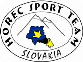
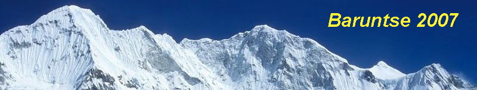

Mera Peak, Baruntse
2007 · Nepál - Himaláje


HorecSport | Úvod | Účastníci expedície | Trasa expedície | Fotogaléria | Popis akcie
Baruntse je 7129m vysoká hora nachádzajúca sa vo východnom Nepále medzi Everestom a Makalu. Je to symetrický snehový vrch, ma štyri hrebene a štyri vrcholy. Na východe je ohraničený Barunským ľadovcom, na juhu Hunku ľadopádom. Na severo-západe je to ľadovec Imja. Tri hlavné hrebene sú situované medzi týmito ľadovcami. Ďaľšie známe vrchy z tejto oblasti sú Chamlang, Ama Dablam, Pumori a trekingový vrch Mera Peak.
Vrchol Baruntse bol prvýkrát dosiahnutý 30. mája 1954 členmi novozélandskej expedície sira Edmunda Hilaryho. Na vrch vystúpili juho-východným hrebeňom.
Cesta juhovýhodným hrebeňom - priamočiare lezenie, väčšinou snehom, ale vo vysokých výškach ju križuje niekoľko ľadových stupňov so sklonom do 50° s najťažším ľadom vo výške 7000m. V spodnej časti trasy je menšie riziko lavín, úseky v hornej časti môžu byť s prevejmi.
Sponzori


Mediálny partner

Pôvodná stránka: archív horecsport.sk